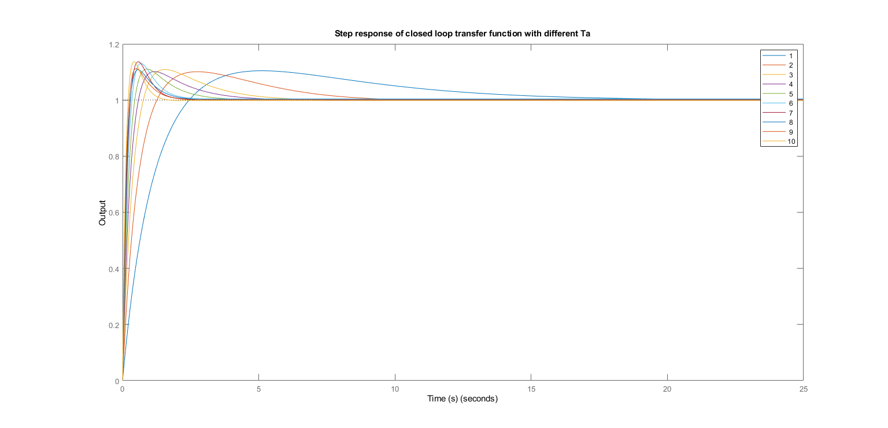

% KASRA HASSANI 9923107 % Purpose of this code: % Creating a closed-loop transfer function using G(s) and PID % Printing individual coefficients of PID after tuning with G(s) % Kp, Kd, Ki % Plotting the Transfer Function with different Ta % Clearing and Closing Everything clc; clear; close all; %------------------------------------------- % Making Transfer Function for G(s) s = tf('s'); G = 1 / (s * (s + 1)); %------------------------------------------- % Tuning G(s) for PID % Other Options = P, PI, PD C = pidtune(G, 'PID'); %------------------------------------------- % Accessing the Individual Coefficients Kp = get(C, 'Kp'); Kd = get(C, 'Kd'); Ki = get(C, 'Ki'); x = sprintf('Kp = %f',Kp); disp(x); y = sprintf('Kd = %f',Kd); disp(y); z = sprintf('Ki = %f',Ki); disp(z); %------------------------------------------- % Closed-Loop Transfer Function T = feedback(C * G, 1); %------------------------------------------- % Showing different Ta Ta_min = 1; % minimum Ta value Ta_max = 10; % maximum Ta value Ta_step = 1; % Ta increment Ta = Ta_min:Ta_step:Ta_max; % Ta vector figure('WindowState','maximized'); % create a new figure hold on; % hold the plot for i = 1:length(Ta) C = pidtune(G, 'PID',i); % C with different Ta T = feedback(C * G, 1); % The new Transfer Function step(T); % plot the step response end hold off; % release the plot legend(num2str(Ta')); % add a legend with omega values xlabel('Time (s)'); % add x-axis label ylabel('Output'); % add y-axis label title('Step response of closed loop transfer function with different Ta'); % add title %-------------------------------------------
Kp = 2.109126 Kd = 1.834131 Ki = 0.538966